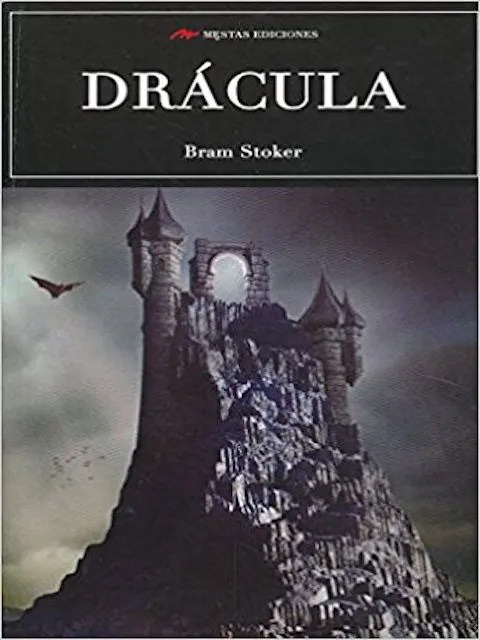

Worldreading

Jonathan Harker viaja a Transilvania para cerrar un negocio inmobiliario con un misterioso conde que acaba de
comprar varias propiedades en Londres. Despues de un viaje plagado de ominosas señales, Harker es recogido en
el paso de Borgo por un siniestro carruaje que lo llevará, acunado por el canto de los lobos, a un castillo en
ruinas. Tal es el inquietante principio de una novela magistral que alumbró uno de los mitos más populares y
poderosos de todos los tiempos: Drácula.
Nº de páginas:512
Editorial:Random House
Idioma:CASTELLANO
Año de edición:2015